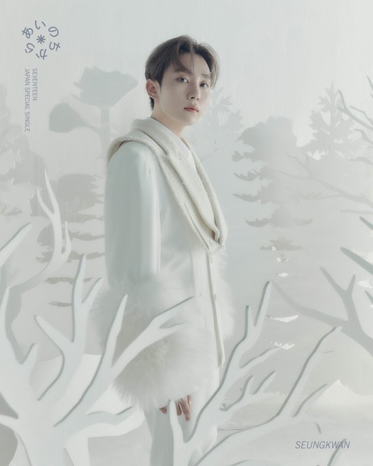
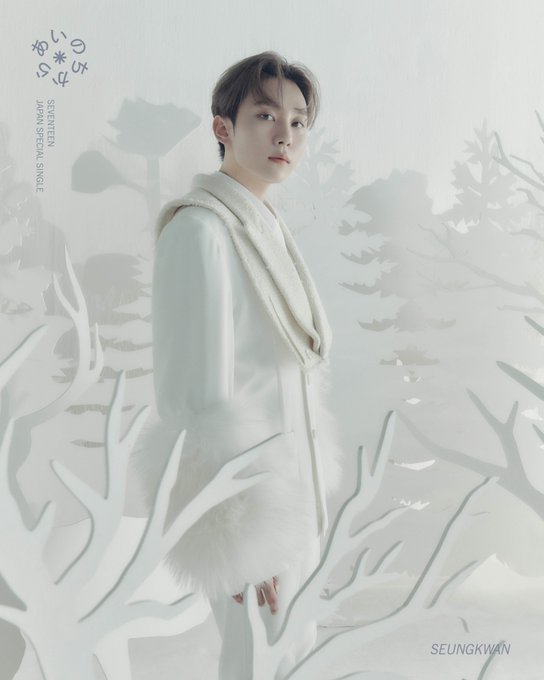

Stage Name: Woozi
Birth Name: Lee Jihoon
Birtday: November 22 1996
Position: Vocal Unit Leader, Lead Vocalist, Producer
Nationality: Korean
Personal Social Media: @woozi_universefactory
- Woozi was born in Busan, South Korea
- His family consists of mother and father, he's an only child
- The meaning of his stage name 'Woozi'comes from the words 'Woori' and 'Jihoon' that means 'our Jihoon'
- Woozi gradueted from Hanlim Arts School (Video Production Department)
- he has the second longest training period of the group (4 years)
- Woozi composes and writes most of the Seventeen songs
- Before debuting Woozi was supposed to be a member of the performance team, but now he is the leader of the vocal team
- Woozi is the shortest of the group. He is 164 cm.
- Woozi also composes/writes songs for other artists such as solo artist Ailee and boyband Nu'est

Stage Name: Jeonghan
Birth name: Yoon Jeonhan
Birthday: October 4 1995
Position: Lead Vocalist, Visual
Nationality: Korean
Personal Social Media: @jeonghaniyoo_n
- Jeonghan was born in Seoul, South Korea
- His family consists of mother, father and a younger sister (she is 4 years younger than Jeonghan)
- The name Jeonghan is very special, 'Jeong' means 'Clean' and 'Han' means 'Country'
- Jeonghan has the nickname 'Angel', which is 'Cheonsa' in Korean, that refers to his birthday, October 4 (10.04 is romanized as 'Cheonsa'in Korean)
- Jeonghan graduated from Hyangnam High School as a science major
- He became a trainee in 2013 and has the second shortest training period along with Joshua
- Jeonghan originally wanted to be a barista (he owns a barista license) or an early childhood teacher
- He participates in writing the lyrics and composing some Seventeen songs
- Jeonghan debuted with long hair, but he said he prfers short hair over long hair
Stage Name: Joshua
Birth Name: Joshua Hong
Birtday: December 30 1995
Position: Lead Vocalist, Visual
Nationality: Korean-American
Personal Social Media: @joshu_acoustic
- Joshua was born in Los Angeles, United States
- His family consists of mother and father, he's an only child
- The meaning of his name 'Joshua' from the Bible means 'God is my salvation' in Hebrew
- Joshua graduated from Downtown Magnets High School which is in Los Angeles
- he was street-casted by a Pledis staff in Korea Town and went to Korea to become a trainee
- Joshua speaks both English and Korean, so he's bilingual
- He became a trainee in 2013 and has the second shortest training period along with jeonghan
- Joshua originally wanted to become a businessman, just like the rest of his family
- He said that when he was in Los Angeles, he had a quiet and a shy personality, but his personality changed when he became a trainee with the other members
Stage Name: DK (Dokyeom)
Birth Name: Lee Seokmin
Birtday: February 18 1997
Position: Main Vocalist
Nationality: Korean
Personal Social Media: @dk_is_dokyeom
- DK was born in Seoul, South Korea
- His family consists of mother, father and a older sister (she is 3 years older than DK)
- He has a dog named 'Uju'
- The meaning of his name 'Lee Seokmin'is 'To be a big, jade-like figure' and his stage name 'Dokyeom' means 'To experience many things'
- Dokyeom graduated from School of Performing Arts Seoul (Practical Dance Department)
- He became a trainee in 2012 and has the 3th shortest training period along with Jun
- He is the leader of Seventeen's first official subunit BooSeokSoon
- DK is known for his powerful vocal, has the loudest singing voice among the members and is known for his balanced ability in every aspect
- He debuted as a musical actor in 2019, he played in the musical 'Excalibur' as King Arthur
 

Stage Name: Seungkwan
Birth Name: Boo Seungkwan
Birtday: January 16 1998
Position: Main Vocalist,Face of the group
Nationality: Korean
Personal Social Media: @pledis_boos
- Seungkwan was born in Busan, South Korea
- His family consists of mother, father an two other sisters (they are 11 years and 5 years older than Seungkwan)
- He has a dog named 'Bookkeu'
- The meaning of his name 'Seungkwan' in chinese characters is 'Winning generously'
- Seungkwan graduated from Seoul Broadcasting Department (Broadcasting & Entertainment Major)
- He became a trainee in 2012 and has the 7th longest training period among the members
- Seungkwan's singing ability is widely acknowledged
- He debuted as a member of the very first Seventeen subunit BooSeokSoon
- Seungkwan participates in lyrics writing and composing Seventeen's songs